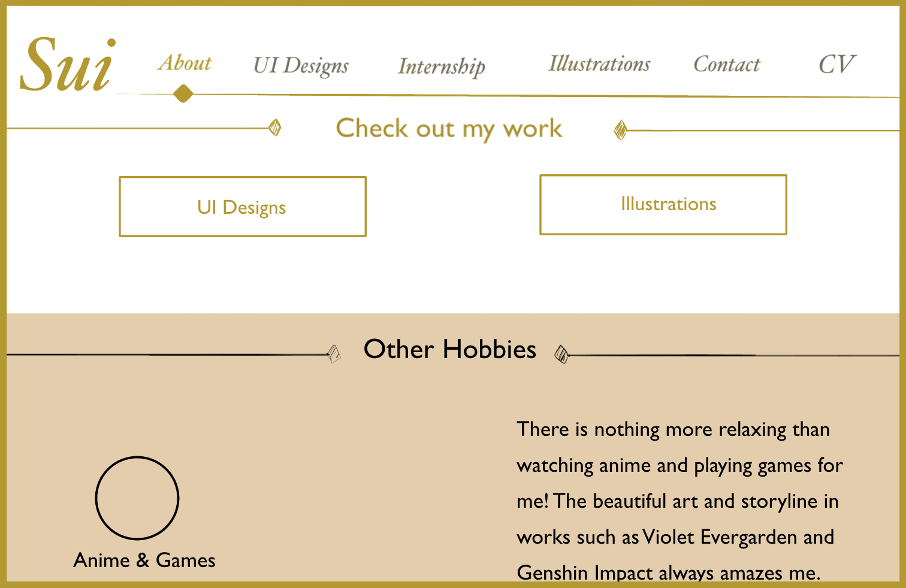
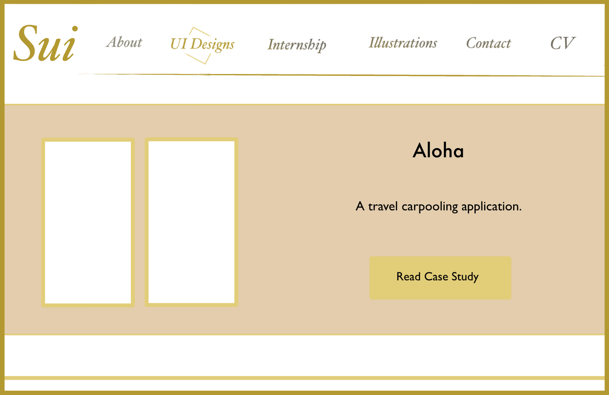
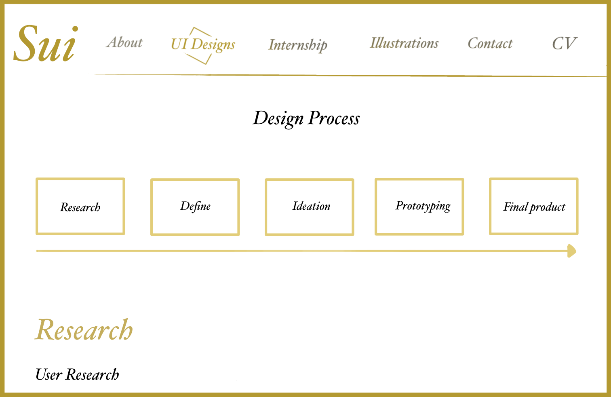
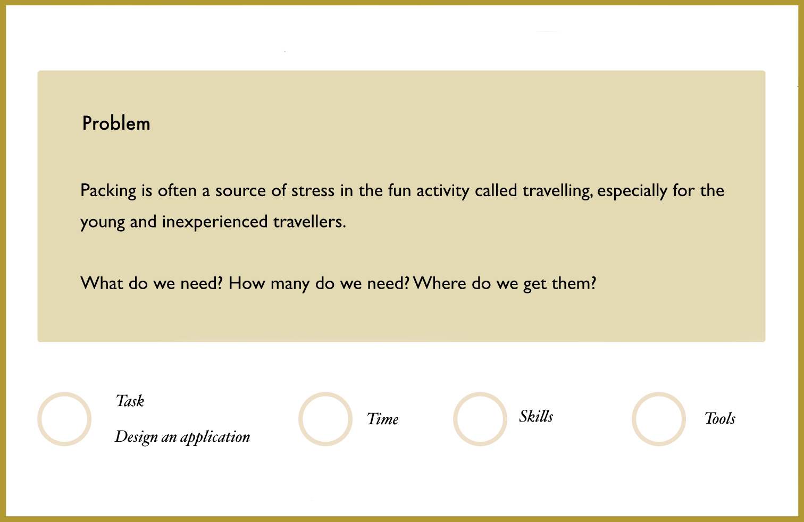
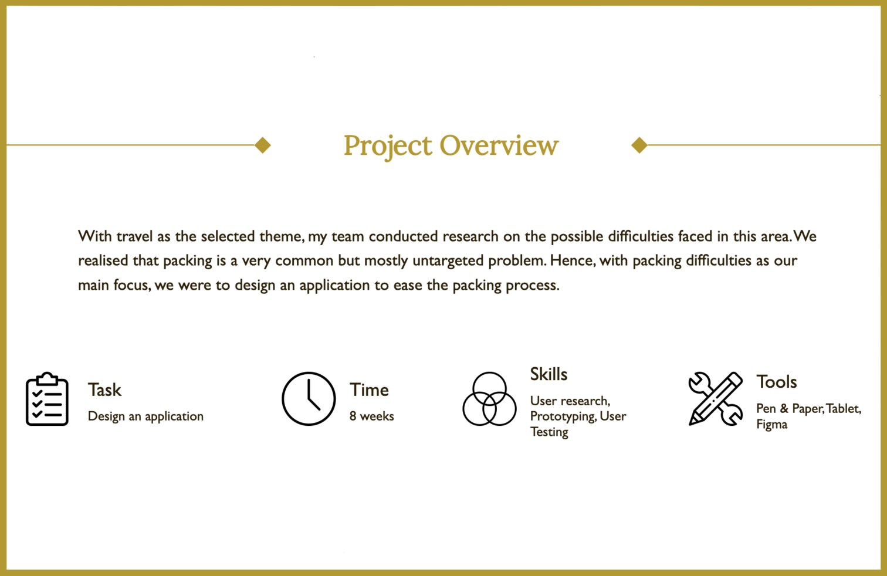

Research
While I wanted to create a portfolio, I was unsure of exactly what goes inside it, or how to present the information.
Hence, I conducted research into the designs of portfolio in general to gain an overview of the aesthetics, then
visited the portfolio of several UI/UX designers to have an understanding of what industry specific elements to take
note of.
After referencing multiple portfolio, I decided on a design language – soft energy, elegant and clean.
I then compiled all the examples that correspond to the design language for moodboarding.
Wireframing
Once the moodboard was ready, I started to do the wireframing on iPad, where I focused on the placement of
various elements, and the general color scheme.




Building on HTML & CSS
With the wireframe as a guide, I started to translate the ideas into a working prototype. Along the way, I
made some changes to the design for reasons such as consistency as well as minimalism.
The images below shows the wireframe design on the left, and the revised prototype design on the right.


User Testing
Upon completion of the prototype, I performed user testing and further refined the design,
before finally hosting it online. This website is the final product itself.